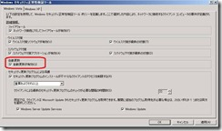
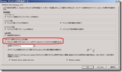
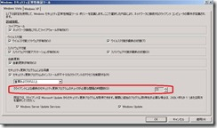
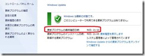
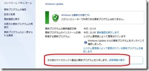
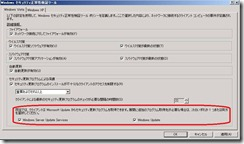
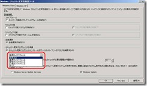

こんにちは。Windows プラットフォーム サポート担当です。
前回の記事で、WSHA が下記のクライアントの状態についてチェックすることができるとご紹介いたしました。
- インストールされている ファイアウォール ソフトウェアの状態
- インストールされている ウィルス対策ソフトの状態
- インストールされている スパイウェア対策アプリケーションの状態
- 自動更新の設定状態
- セキュリティ更新プログラムの適用状態
- 最後に Windows Update サイトと通信を行ってからの経過時間
- Windows Update の接続先の種類 (Microsoft Update / Windows Update / WSUS )
- 現在適用されていないセキュリティ更新プログラムの重要度
今回は、前回に引き続きまして、上記の 4 ～ 8 の項目がどのようにチェックされるかについて、解説します。
4. 自動更新の設定状態
自動更新の設定状態は、”Automatic_Updates_ClientStatusCode” として SoH に格納されます。取り得る状態は下記の通りです。
- 自動更新が無効である
- 自動更新の設定は構成されていない
- 自動更新が有効で、最新のセキュリティ更新プログラムの確認のみを行う
- 自動更新が有効で、最新のセキュリティ更新プログラムの確認とダウンロードを行う
- 自動更新が有効で、最新のセキュリティ更新プログラムの確認、ダウンロード、インストールを行う
参考資料
この項目を評価する WSHV の設定は、下記の項目です。

[自動更新が有効] のチェックがオンになっている場合は、下記の状態はポリシー非準拠と判定されます。
- 自動更新が無効である
- 自動更新の設定は構成されていない
“自動更新の設定は構成されていない” の状態は、OS インストール後、まだ自動更新の設定を確定しない場合等に起こりえます。この状態では自動更新は行われませんので、ポリシー非準拠と判定されます。
なお、この項目については、あくまでも “自動更新の設定が有効になっているか否か” の判断のみが行われます。もし、何らかの事情によって Microsoft Update や Windows Update に失敗していたとしても、自動更新の設定が有効であればポリシーに準拠しているものと判定されます。
逆に、手動で Microsoft Update や Windows Update を行い、セキュリティ更新プログラムの適用状態が最新になっていたとしても、自動更新の設定が無効になっていればポリシーに非準拠であると判断されます。
5 ～ 8. セキュリティ更新プログラム関連の状態の判定
前述の通り、”4. 自動更新の設定状態” については自動更新が設定されているだけでクライアントはポリシーに準拠している状態と判定されます。このため、自動更新が定期的に試行されることは保障されますが、肝心のセキュリティ更新プログラムが管理者が意図したように適用されているかの確認を行うことはできません。
セキュリティ更新プログラムの適用状態は、WSHV 側で下記の設定を有効にすることで有効になります。

設定画面の表記からも想像がつくかと思いますが、”セキュリティ更新プログラムによる保護” のチェックを有効にすると、連動して下記の項目のチェックも有効になります。
- 最後に Windows Update サイトと通信を行ってからの経過時間
- Windows Update の接続先の種類 (Microsoft Update / Windows Update / WSUS )
- 現在適用されていないセキュリティ更新プログラムの重要度
これらのチェック項目に対して WSHA がどのようなセキュリティ状態の報告を行うかと、それがどのようにして WSHV でチェックされるかの仕組みは若干複雑です。下記に順を追って説明していきます。
5. セキュリティ更新プログラムの適用状態
まず、”セキュリティ更新プログラムによる保護” が有効になっていると、WSHV はクライアントから送信される SoH 内の “Security_Updates_ClientStatusCode” の値を評価します。
この値がどのようなステータス コードを取りうるかは、下記の公開情報に記載されています。
参考資料
Applicable health classes が “Security updates” となっているのが、”Security_Updates_ClientStatusCode” に記録されるステータス コードです。
| Value | ClientStatusCode status | Applicable health classes | Meaning |
|---|---|---|---|
| 0x00FF0005 | S_MSSHA_NO_MISSING_UPDATES | Security updates | The WUA reports that the client is not missing any updates. |
| 0x00FF0006 | S_MSSHA_ MISSING_UPDATES | Security updates | The WUA reports that the client is missing security updates. |
| 0xC0FF000C | E_MSSHAV_NO_WUS_SERVER | Security updates | The WUA reports that the client is configured for Windows Server Update Services (WSUS), but no WSUS server has been specified. |
| 0xC0FF000D | E_MSSHAV_NO_CLIENT_ID | Security updates | The WUA reports that the client is configured for WSUS but does not have a valid client ID. |
| 0xC0FF000E | E_MSSHAV_WUA_SERVICE_DISABLED | Security updates | The WUA service on the client has been disabled. |
| 0xC0FF000F | E_MSSHAV_WUA_COMM_FAILURE | Security updates | The WUA service is running, but the WSHA is unable to communicate with it to get security update status. |
| 0xC0FF0010 | E_MSSHAV_UPDATES_INSTALLED_REQUIRE_REBOOT | Security updates | The WUA reports that the client requires being restarted to complete the installation of required security updates. |
| 0x00FF0008 | E_MSSHAV_WUA_SERVICE_NOT_STARTED_SINCE_BOOT | Security updates | The WUA on the client has not started since the computer started. |
多くの場合は、下記の 2 つのステータス コードが報告されることになります。
S_MSSHA_NO_MISSING_UPDATES
検出された全ての更新プログラムが適用されている状態です。WSHV は、引き続き下記の項目のチェックを行います。
- 最後に Windows Update サイトと通信を行ってからの経過時間
- Windows Update の接続先の種類 (Microsoft Update / Windows Update / WSUS )
S_MSSHA_ MISSING_UPDATES
検出された更新プログラムの中に、未適用のプログラムが存在している状態です。WSHV は、引き続き下記の項目のチェックを行います。
- 最後に Windows Update サイトと通信を行ってからの経過時間
- Windows Update の接続先の種類 (Microsoft Update / Windows Update / WSUS )
- 現在適用されていないセキュリティ更新プログラムの重要度
この 2 つ以外のステータス コードはエラー コードです。WSHA は Windows Update サービスからセキュリティ更新プログラムの適用状態を取得しますが、何らかの理由により適切な情報を取得できないと判断されると、上記の表に記載したようなエラー コードを報告します。
WSHA が Windows Update サービスからセキュリティ更新プログラムの適用状態を取得するタイミングや、どのような場合にエラーとして報告されるかについては、様々な条件によって動作が異なっており、複雑です。この仕組みについては、また別の記事でご紹介させていただく予定ですが、一点だけ、先んじてこの記事でお伝えいたします。
Windows Update サービスは既定で “遅延開始” となっているため、OS が起動してから数分経過しないと完全に起動しません。この状態では、WSHA は Windows Update サービスからセキュリティ更新プログラムに関する情報を取得できず、クライアントの現在の状態を WSHV に対してレポートすることができません。しかしながら、この状態をポリシー非準拠と判定してしまうと、OS 起動後の数分間は常に検疫されたネットワークに接続されることになり、利便性が大きく損なわれます。
このため、OS 起動後に Windows Update サービスが完全に起動するまでの間については、NAP Agent サービスが持つ SoH のキャッシュ情報が使用され、前回の OS のシャットダウン前に最後に使用された SoH が WSHV に送信されるような仕組みになっています。
なお、NAP Agent が所有する SoH のキャッシュは、下記のレジストリに保存されています。
1 | レジストリ キー: |
以上が、”Security_Updates_ClientStatusCode” のチェックの仕組みです。前述したとおり、ステータス コードが “S_MSSHA_NO_MISSING_UPDATES”、”S_MSSHA_ MISSING_UPDATES”、 “E_MSSHAV_NO_WUS_SERVER” のいずれかの場合、およびキャッシュされた SoH が使用された場合は、残りの項目のチェックに処理が進みます。
6. 最後に Windows Update サイトと通信を行ってからの経過時間
続いて、最後に Windows Update サイトと通信を行ってからの経過時間のチェックの仕組みについて説明します。この設定は、下記の WSHV の設定にて指定されています。

もしクライアント上で検出された全てのセキュリティ更新プログラムが適用されているとしても、最後に Windows Update を行ったのが 1 ヶ月前であれば、そのクライアントは安全な状態とは言い難いでしょう。この項目では、そのようなクライアントをポリシー非準拠として判定するために、最後に Windows Update を行ってからの経過時間がポリシーで既定した時間をオーバーしていないかをチェックします。既定では、22 時間以上 Windows Update を行っていないクライアントは、ポリシー非準拠として判定されます。
最後に Windows Update を行った時間は、Windows Vista 以降であれば、[コントロール パネル] - [Windows Update] の下記の画面から確認できます。

ここに記録されている時間と現在時刻の差分が、”DurationSinceLastSynch” として SoH に格納され、WSHV によって評価されます。
参考資料
この評価は完全に WSHV 側で行われるため、クライアントは Windows Update を行わなければならない最小の間隔が何時間であるかを知りません。このため、クライアントを使用しているうちに自然にポリシーで既定した最小間隔を経過した場合でも、特にクライアントから再度検疫のチェックの要求が送信されることはなく、結果として、クライアントは正常なネットワークへのアクセスを行い続けることができます。
本題とは外れますが、クライアントがどのようなタイミングで検疫のチェックを行おうとするかの仕組みは非常に複雑です。その詳細については、また後日、別の記事でご紹介させていただく予定です。
7. Windows Update の接続先の種類 (Microsoft Update / Windows Update / WSUS )
次は、Windows Update の接続先の種類の判定について説明します。
セキュリティ更新プログラムの取得方法は、大きく分けて次の 3 つです。
- Microsoft Update から取得する
- Windows Update から取得する
- WSUS (Windows Server Update Service) を設置して、そこから取得する
Microsoft Update では、Windows OS だけではなく、Office コンポーネントなどを含めた多くの Microsoft 製品に関するセキュリティ更新プログラムをインターネット上の Microsoft Update サイトからダウンロードすることができます。一方、Windows Update では、Windows OS に関するセキュリティ更新プログラムのみをダウンロードできます。
** Windows Update のみを行うように設定されているコンピューターで Microsoft Update を行うように設定を変更するには、下記の画面で “詳細情報の表示” をクリックします。

また、イントラネット上に WSUS サーバーをご用意いただき、個別に適用するセキュリティ更新プログラムを承認してクライアントに配布する仕組みを導入しているお客様も多くいらっしゃると思います。
WSHV では、クライアントが前述のいずれの方法で Windows Update を行ったかをチェックすることができます。この設定は、WSHV の下記の項目で行います。

図の通り、Windows Server Update Services と Windows Update をオプションの Windows Update 接続先として設定することができます。
ここで、「あれ？ Microsoft Update のチェックボックスがない・・・」と思われる方もいらっしゃるかもしれません。実は、Microsoft Update を行った場合は、全てのセキュリティ更新プログラムに対する確認が行われた、つまり最も厳しいセキュリティのチェックを通過として、Windows Update の接続先の種類の判定のチェックには必ず成功し、ポリシー準拠として判定されます。 言うなれば、ワイルドカードのようなもので、この設定を変更することはできません。
これに加えて、[Windows Server Update Services] のチェックがオンになっている場合は、WSUS によるセキュリティ更新プログラムの取得を行った場合もポリシー準拠となり、[Windows Update] のチェックがオンになっている場合は Windows Update によるセキュリティ更新プログラムの取得を行った場合もポリシー準拠と判定されるようになります。
なお、どのような方法で Windows Update を行ったかは、”UpdatesFlag” として SoH に格納されます。
参考資料
8. 現在適用されていないセキュリティ更新プログラムの重要度
最後に、Windows Update や Microsoft Update によって検出されたセキュリティ更新プログラムが、クライアントに適用されているか否かがどのように判定されているかをご説明します。
WSHV の設定では、クライアントに適用されるべきセキュリティ更新プログラムの重要度を下記の項目で設定できます。

画面の通り、5 つのレベルで設定することが可能です。
- 緊急のみ
- 重要およびそれ以上
- 警告およびそれ以上
- 注意およびそれ以上
- すべて
設定値の通り、例えば “重要およびそれ以上” に設定されている場合は、”警告”、”注意” レベルセキュリティ更新プログラムが未適用であってもポリシー非準拠にはなりませんが、”緊急”、”重要” レベルのセキュリティ更新プログラムが適用されていないと、ポリシー非準拠として判定されます。
クライアント上で、どのレベルの更新プログラムが未適用とされているかは、Windows Update の接続先の種類と同様、”Updates_UpdatesFlag” として SoH に格納されます。
参考資料
なお、Windows 標準の WSHA、WSHV の評価対象となるのは、”セキュリティ更新プログラム” のみです。”重要な更新” や “更新プログラム” などはチェックの対象となりません。更新プログラムの種類については、下記の弊社 Web サイトに説明がございますので、ご参考にしていただければと思います。
参考資料
まとめ
前回から 2 回にわたって、Windows 標準の NAP で使用される WSHA が、クライアントのどのような状態を収集してレポートするか、それを WSHV がどのように判定するか、ご紹介しました。
次回以降も引き続き、NAP の動作に関する詳細をご紹介していく予定です。お客様環境での設計構築、トラブルシューディングのご参考にしていただければ幸いです。
特記事項
本記事は 2009 年 12 月 14 日に公開された記事を本ブログに移行した記事になります。
また本情報の内容 (添付文書、リンク先などを含む) は、作成日時点でのものであり、予告なく変更される場合があります。